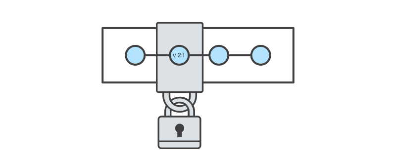

Version control systems are a category of software tools that help a software team manage changes to source code over time. Version control software keeps track of every modification to the code in a special kind of database. If a mistake is made, developers can turn back the clock and compare earlier versions of the code to help fix the mistake while minimizing disruption to all team members.
Among almost all software projects, the source code is like the crown jewels - a precious asset whose value must be protected. For most software teams, the source code is a repository of the invaluable knowledge and understanding about the problem domain that the developers have collected and refined through careful effort. Version control protects source code from both catastrophe and the casual degradation of human error and unintended consequences.
Git commit command is the main function for saving changes to local repository safely. Commit takes a snapshot of the project and treats it as a version content.
The git push command is used to transfer or push the commit, which is made on a local branch in your computer to a remote repository like GitHub. The command used for pushing to GitHub is- git push 'remote_name' 'branch_name'
A fork is a copy of a repository. Forking a repository allows you to freely experiment with changes without affecting the original project.